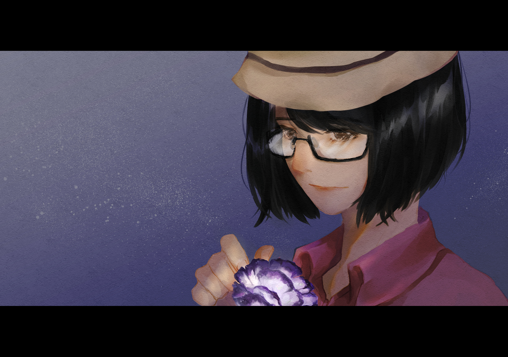
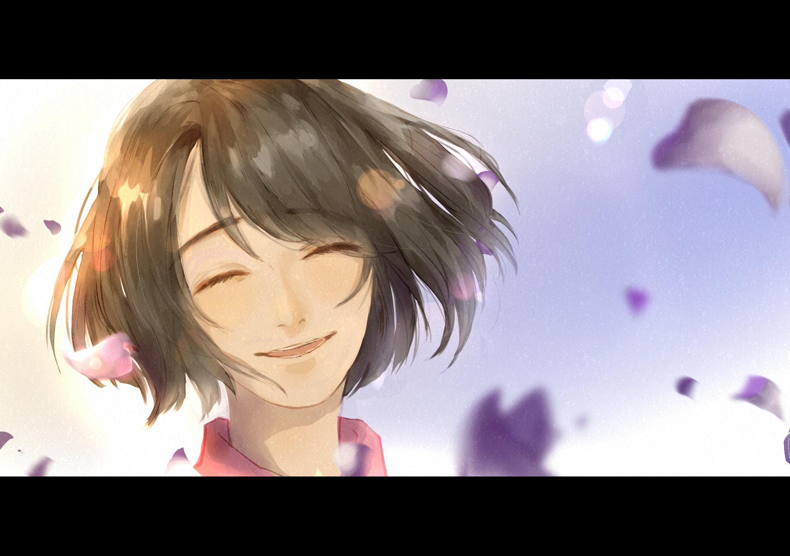

「阿娟，我找到一個東西要給妳。」
「我想說妳看到這個心情會比較好。」
她伸出手接住那朵花。
微濕潤的花梗顯示出剛被摘下沒多久，花瓣像是被淡藍色水彩渲染開的白紙一樣而外觀看似玫瑰，不過她很清楚這並不是玫瑰，因為她太熟悉這花了。
「哇．．．好漂亮的花喔．．．」她撫著花瓣微笑說著並小心翼翼地放入懷裡。

ｘ
秋天的微風吹進了房間，白色的窗簾隨著微風擺動，一名有著烏黑長髮的女子躺在潔白的床上，靜靜地看著身旁忙進忙出的短髮女子。
「今天我去花店時，碰巧跟店員聊起星座來，很有趣呢！」
她看著短髮女子將手中的花束放入剛擦拭好的花瓶中，並且用著各種姿勢左右觀看，試圖將花瓶調整出最完美的角度。看著對方認真可愛的模樣，她忍不住笑出聲。
「欸！妳在笑我嗎？」
「沒有啊，覺得花很漂亮呢。」她收起笑容裝作沒事。
「是不是！跟妳說唷～這種花叫做洋桔梗，然後是我的星座守護花唷！」短髮女子露出興奮的笑容並驕傲地展示說明自己帶來的花。
「嗯，是什麼星座啊？」
「齁！妳每次都忘記，是巨蟹座啊！」
「我沒有在研究星座，只要知道妳的生日就夠了。」她試圖安撫對方，希望能讓對方收起癟嘴的表情。
「那我生日什麼時候啊～」短髮女子挑著眉雙手抱胸問著。
「七月十三日。」雖然自從出社會後就沒有機會幫對方慶祝生日，但自己姐姐的生日她是不會忘記。
「嗯哼～」聽完她的回答後，短髮女子雖然沒有很滿意，但畢竟回答正確也只能接受了。正想繼續調整那花瓶的角度時，像是忽然想到什麼一樣，迅速轉頭望著床上的她。
「那妳知道為什麼我要買這些花嗎？」短髮女子眼神閃閃發亮地望著她，暗自竊喜她絕對猜不到答案，但又期待她可以回答得出來。
「嗯．．．妳不是說這花是妳的守護花？」
「嗯對啊！所以咧？」
「就因為是妳的守護花，所以買了它。不是嗎？」她不太理解的望著對方說著。
「唉唷！是這樣沒錯啦！但是．．．唔呃．．嗯．．．」短髮女子認為這個答案是正確的，但又不是自己所期望的回答，感到有點不知所措而左右來回碎步走著。
雖然不知道到底想幹嘛，但看著對方手足無措的行為有點懷念。她自從離開家後就很少與姊姊見面，尤其是發生了那件事後．．．更沒想到現在卻是以這種形式再次團聚。她從窗戶望出遠方而陷入了回憶。
「咳咳—」她忽然感受到一點寒意，小咳了一下。
「欸欸！是不是風太冷了！」短髮女子趕緊關上窗戶。
「沒事啦。」她挪了挪身軀往下緊靠溫暖的棉被。
「我去上班時，妳一個人待在醫院會不會寂寞啊？」短髮女子整理著她的棉被防止有寒風吹進並問道。
「還．．．其實有一點！」聽到這問題她愣了一下，原本有些害羞的下意識回答還好，但抬頭看到對方露出小狗般地眼神趕緊換個回答。
「嘿嘿！因為我要去超市上班，讓妳只能一個人待在醫院，所以我帶來這些花來陪妳。」短髮女子走向花瓶輕摸著花瓣，「假如妳覺得寂寞時，可以看看它們唷！它們會代替我守護妳的。」回頭望向她露出燦爛笑容說著。
她又再度愣了一下，源自這美景。
「嗯．．．謝謝。」她微笑著，暖意從心頭湧上。
從那之後，家中窗台旁的花瓶內總是有著新鮮的洋桔梗，直到世界崩壞的那天到來。
ｘ
躺在高爾夫球場上閉眼喘息著，腦袋也漸漸混沌了起來，也許是因為高燒的緣故，又或是來自安眠藥和嗎啡所發揮的作用。她吃力地掀開眼睛，儘管視線已模糊，依然可以看到遠處的夕陽。
看著太陽，她忽然覺得寒冷的身體溫暖了起來。
微轉頭看著右手邊的男子握緊雙拳背對著自己，她已經沒有力氣說出再多的抱歉與感謝。這陣子看著他對安全區付出的一切和所背負的事情，那些行為是如此懷念。自己有多久沒有再見到如此善良且願意付出的人呢？真希望他可以自私一點，對自己好一點，不要讓愛他和他愛的人傷心。
再看著左手邊的男子，他緊緊握著手槍但眼神卻如此溫柔。或許因為彼此是相同類型的人，她在他面前總是可以稍微做著自己，她也知道他一旦下定決心就會做到。對於她最後的心願，託付給他是正確的，她很感謝也很放心。
聽到這一年多來已聽過無數次的機械聲，她闔上眼露出久違的輕鬆笑容。
「晚安。」
「砰—」
ｘ
．
．
．
．
睜眼後，她發現自己置身於一片花海中，這些淡藍色的花瓣隨風擺盪。
意識到了什麼的她，慌張地四處張望奔跑著，但下秒卻害怕地猶豫駐足，又再下定決心般地走著。
終於，她找到了。
遠處有個身影，是抱著花束的短髮女子。
她停下腳步瞪大雙眼凝視著女子緩步走向自己，她再也無法控制逐漸扭曲的面容，並放任眼淚滑落，令嗚咽聲從喉間發出。短髮女子在她面前停下了腳步，傾身放下花束於花叢旁，輕撫宛如孩子般哭泣的她，柔聲說：
「真是辛苦妳了！媽在等我們呢，我們回家吧——」
「—阿菁。」

－歌詞自《永恆的夢》
end.